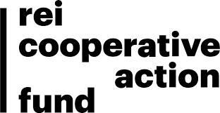
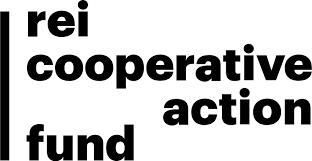

General Overview
I study human cognition in the laboratory, technology-mediated, and real-world environments. In one line of research, I utilize electrocardiography (ECG), scalp electroencephalography (EEG), intracranial electroencephalography (iEEG), and virtual reality (VR) to study the psychophysiological effects of immersion in nature on attention, affect, and stress. In this work, I investigate neural functioning from the level of individual neurons to local field potentials, up to the cerebral cortex. In another line of research, I utilize ECG, EEG, driving simulation, and on-road data collection methods to explore driver attention and arousal when multitasking behind the wheel and operating autonomous vehicles. My work has significant implications for public health, urban design, environmental psychology, human factors/engineering psychology, and human-technology interactions. I am interested in the continued development of mobile psychophysiological methods and data fusion techniques for reliably assessing cognition in the real-world and am passionate about translating my research into tangible impact in my community.


Research Area 1: Distracted Driving
My distracted driving research explores the cognitive implications of multitasking behind the wheel. Using behavioral measures, driving simulation technology, naturalistic methods, and on-road ECG and EEG, I explore the impact of multitasking on cognition and driving performance, shedding light on the risks posed by modern technological interfaces in vehicles. My findings underscore the critical need for human factors research, policy interventions, and technological innovations aimed at mitigating the dangers of distracted driving and fostering safer road behaviors. Read more about this work here: Strayer & McDonnell (2025); McDonnell et al. (2021).
Research Area 2: Autonomous Vehicles
I also explore how humans interact with automated vehicle technology. Can modern, autonomous vehicles (e.g., Tesla) help overcome the cognitive limitations of error-prone humans? Can automated driving free up time and cognitive resources for humans to allocate to other tasks? Or do human drivers become complacent under automated driving conditions, leading to even more dangerous outcomes such as drivers “zoning out” behind the wheel? To answer these questions, I again utilize mobile EEG, ECG, and detection response tasks to assess driver attention, workload, and arousal during on-road, automated driving. Read more about this work here: McDonnell et al. (2023); McDonnell et al. (2021); Cooper et al. (2023)
I am guest editing two special issues related to this work. Please consider contributing!
- Automation and Human Cognition at Cognitive Research: Principles and Implications
- Investigating the Human Factors of Artificial Intelligence at Human Factors
Research Area 3: Environmental Neuroscience
The over-stimulation, relentless task-switching, and cognitive demands characteristic of our modern, urban environments can quickly lead to stress and mental fatigue. How might we escape and recover from these demanding environments? Can immersion in nature help decrease stress and provide relief from mental fatigue? In my environmental neuroscience work, I utilize electrophysiological methods (ECG, scalp EEG, and intracranial EEG) to understand the impact of exposure to nature (nature images, VR nature, a nature walk, and a multi-day immersion in nature) on stress recovery and attention restoration. This work from the Applied Cognition Lab has been featured in many popular outlets, including but not limited to PBS America Outdoors, National Geographic, Outside Magazine, The Nature Fix by Florence Williams, The New York Times, and Times Magazine. Read more about this work here: McDonnell et al. (2025a); McDonnell et al. (2025b); McDonnell & Strayer (2024b); McDonnell & Strayer (2024a); Scott et al. (2020).
Research Area 4: Community-based Research
I conduct community-based research alongside community partners that are committed to increasing access to nature for all. This work focuses on evaluating the effectiveness of nature-based programming in improving mental health and well-being, with the ultimate goal of making nature more accessible and inclusive, promoting the health and well-being of all community members. Read more about this work here: LoTemplio et al. (2023).
Research Collaborators and Funding Sources


 
